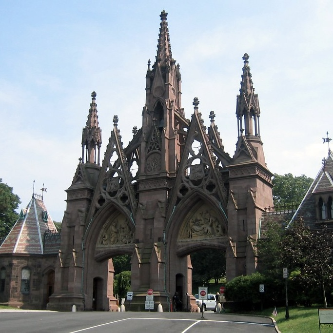
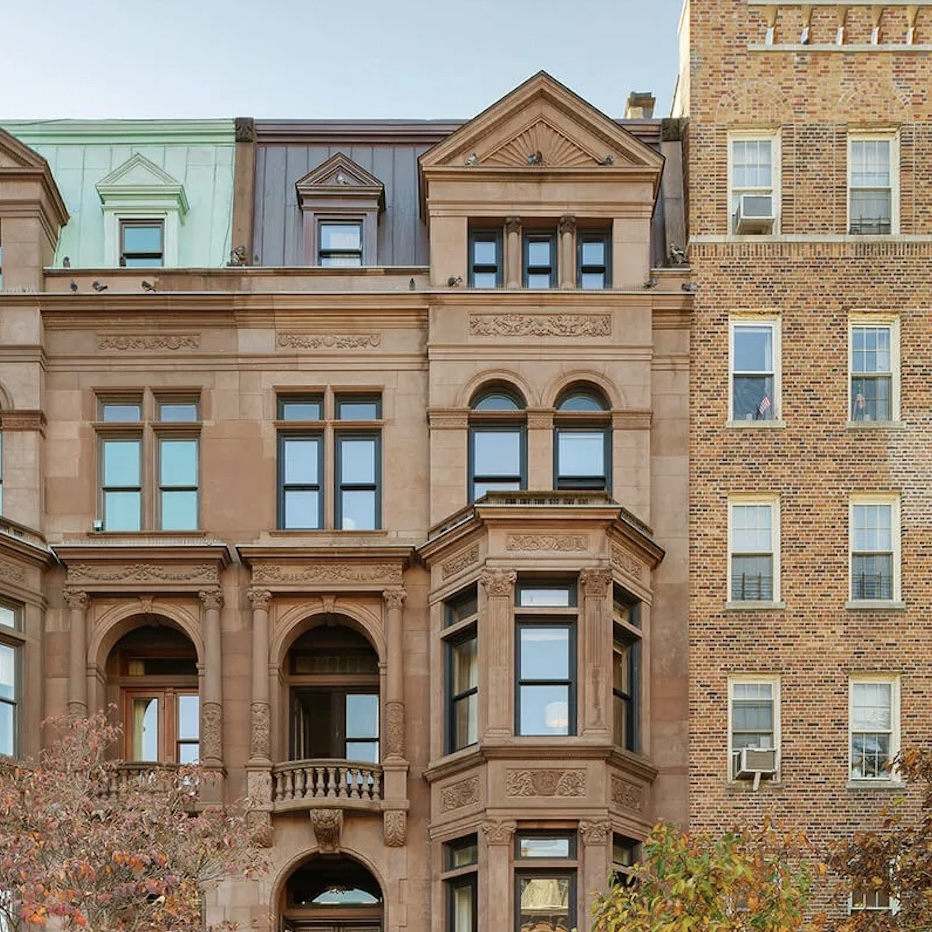

More on the Borough
The borough of Brooklyn is packed with a rich variety of architectural styles, including brownstones,
industrial lofts, mid-century towers, and contemporary designs. Many well-known Brooklyn neighborhoods
cropped up as hubs of industrialization, while others became enclaves for specific immigrant populations and
ethnic groups whose culture shaped Brooklyn into what it is today. Gentrification began spreading to
different areas of Brooklyn in the 1960’s and 70’s– affecting neighborhoods such as Park Slope—and continued
as the borough was viewed less as a mere suburb of Manhattan and became a desirable place to live in its own
right (https://www.britannica.com/place/Brooklyn-borough-New-York-City).
Landmarks across Brooklyn are vast, from the famous Coney Island Boardwalk to the Brooklyn Bridge, which
opened in May 1883, connecting the boroughs of Brooklyn and Manhattan over the East River
(https://archaeology.cityofnewyork.us/collection/nyc-timeline/brooklyn-bridge-opens).
The more transportation options that became available, the more cultural movement occurred between the
boroughs, with new populations discovering and ultimately helping to build Brooklyn (New York Transit
Museum). Architecturally, neighborhoods such as Clinton Hill, Carroll Gardens, Fort Greene, Brooklyn
Heights, and Bedford-Stuyvesant are known for their endless rows of brownstones, and each neighborhood is
preserved in its own right as a historic district and New York City landmark, along with many others
(https://www.bklynlibrary.org/blog/2010/10/22/brooklyn-architecture-and).

Green-wood Cemetary Gates
The Green-wood Cemetery Gates were designed in 1838 by Richard Upjohn as an extravagant showcase of
Gothic Revival architecture, serving as the main entrance to the historic Green-wood Cemetery, which is
a beloved Brooklyn landmark and is considered the first public park of the borough
(https://s-media.nyc.gov/agencies/lpc/lp/0149.pdf).

Brooklyn Academy of Music
The Peter Jay Sharp Building was built in 1908 and designed by Herts & Tallant, a New York architectural
firm responsible for dreaming up some of the grandest theatres across the five boroughs using elements
of the Italian Renaissance Revival style. Today, the Peter Jay Sharp Building is home to the Brooklyn
Academy of Music and is a fixture of Brooklyn artistic expression
(https://www.bam.org/about/history/bam-hamm-archives/bam-buildings).

Pfizer Mansion
The Pfizer Mansion is a Queen Ann-style mansion built in 1887 by the co-founder of the Pfizer
pharmaceutical company. It cycled through many lives since then, with spells as a public library,
Catholic school for girls, and home to a rock musician. It is currently on the market for 9.375 million
(https://www.brownstoner.com/real-estate-market/clinton-hill-pfizer-mansion-280-washington-avenue-elevator/).